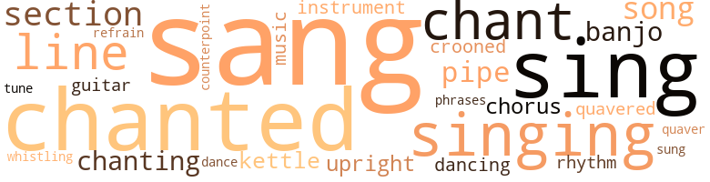
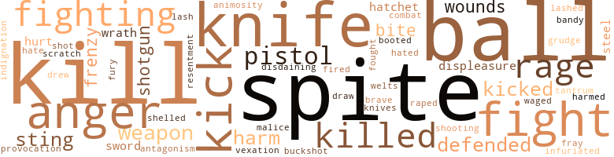
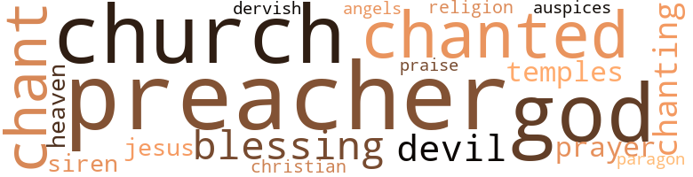

Inchin' Along, by Kelley, Welbourn (1932)
107 music-related terms matched in this text.
Most frequent terms in this topic: sang (11); chanted (10); singing (8); sing (8); chant (8)
banjo.n.01
Definition: a stringed instrument of the guitar family that has long neck and circular body
| word | sentence |
|---|---|
| banjo | In the low swamplands sound carries far , and from across the sluggish river came the faint plunks of a five-stringed banjo , chords strummed over and over , monotonously , in a tempo that had originated in the timeless past on an African veldt . |
| banjo | Again the banjo chords floated to him out of the darkness , and he reiterated : " All I needs me now is a good ' oman - her to he ' p me ' roun ' a ' ter I done moved in . " |
| banjo | And , as if it had been a signal , the plunk of the banjo again was wafted through the night . |
| banjo | Lige 's ramshackle cabin , a half-hearted structure of poles , corrugated tin retrieved from an abandoned cotton gin , and rough-edge boards , throbbed to the stamping of feet inspired by the plunk of the banjo which had come to Dink through the night . |
chant.n.01
Definition: a repetitive song in which as many syllables as necessary are assigned to a single tone
| word | sentence |
|---|---|
| chant | But Dink had his land , anyway ; and as he trudged along homeward his voice rose in a song that was at once a chant of victory and a profession of humility . |
| chant | Taking up a post near Dink , Lige began a monotonous beat on the bottom of the tin pan , at the same time singing a rhythmic chant . . . . " Clang , clang , clang , " sounded the beating of the tin pan . |
| chant | But Lige kept up his beating and his chant as hundreds upon hundreds of bees settled on Dink 's wrist . |
| chant | He stood stock still as Miss Osie , unafraid , approached with the big bucket and as Lige kept up his rhythmic chant . |
| chant | From over at Miss Osie 's cabin came the synchronized chant of soulful grief . |
chorus.n.01
Definition: any utterance produced simultaneously by a group
| word | sentence |
|---|---|
| chorus | They were closer now and occasionally there would come a pause in the running while the dogs set up a full and clamorous chorus at a spot where Big Shine had fallen and stained the earth with blood . |
| chorus | And the chorus : Oh , mo ' ner , yo ' shall be free , Oh , mo ' ner ! |
| chorus | And the inevitable chorus : Oh , mo ' ner , yo ' shall be free - Oh , mo ' ner ! |
counterpoint.n.01
Definition: a musical form involving the simultaneous sound of two or more melodies
| word | sentence |
|---|---|
| counterpoint | This time the tempo was slower , a throbbing counterpoint , and a man lifted his voice in pulsing , slurring song : Hyah yo ' , rounder , Whah at yo ' done gone ? |
croon.v.01
Definition: sing softly
| word | sentence |
|---|---|
| crooned | He would sit and silently watch the white bundle of flesh as Auntie Mell swayed to and fro with it and gently crooned . |
| crooned | " Rock-a-bye , baby , " softly crooned fading Miss Mary Pearl , harlot . |
dance.n.01
Definition: an artistic form of nonverbal communication
| word | sentence |
|---|---|
| dance | No voice was raised as the older women began to look after the two prostrate men and the crowd began to drift back into the house , where the first chords for a new dance already had sprung up . |
dance.v.02
Definition: move in a pattern; usually to musical accompaniment; do or perform a dance
| word | sentence |
|---|---|
| dancing | Probably Clem , he decided , because Jobe had been dancing with the Bell twin who seemed to be in the family way when he had arrived . . . . |
dance.v.03
Definition: skip, leap, or move up and down or sideways
| word | sentence |
|---|---|
| dancing | Occasionally a couple , after dancing awhile in closer embrace than was necessary , would break away from the dancers and walk through the door . |
guitar.n.01
Definition: a stringed instrument usually having six strings; played by strumming or plucking
| word | sentence |
|---|---|
| guitar | The door opened shortly but at first no one appeared , Inside , Dink and Lige could hear the lazy twang of a guitar and the pleasantly drawling voice of a white man . . . . " Tell Mary Pearl what a pretty little girl you are , " the white man 's voice drawled coaxingly . . . . " I 'm pretty li ' l gal , " came Baby Mell 's dutiful voice in an answer no doubt influenced by a small coin . . . . " Now tell Mary Pearl who you are . |
| guitar | But she giggled in a childishly embarrassed vet intrigued manner . . . . " Tell Mary Pearl you 're not a nigger , " the white man 's pleasant voice drawled on coaxingly , in a sort of accompaniment to the guitar 's lazy chords . |
kettle.n.04
Definition: a large hemispherical brass or copper percussion instrument with a drumhead that can be tuned by adjusting the tension on it
| word | sentence |
|---|---|
| kettle | The kettle , slightly raised at one end , was divided into cross sections of about eighteen inches each , but with each section opening by vent into the other . |
| kettle | The cane juice was poured first into the upper end of the kettle where , as more and more water evaporated from the fluid and it became heavier , it flowed , still boiling , to the lower end . |
| kettle | Dink asked of Lige , who was helping at the syrup kettle . |
music.n.01
Definition: an artistic form of auditory communication incorporating instrumental or vocal tones in a structured and continuous manner
| word | sentence |
|---|---|
| music | The music stopped , the banjoist letting his instrument roll over on its drumhead in his haste to get to the scene . |
| music | Dink dropped back into the bateau the adze which he had meant to return to Mist ' Henry that night ; then he set out toward the house whence came the music and where all the niggers in Piny Bog would be gathered . |
musical_instrument.n.01
Definition: any of various devices or contrivances that can be used to produce musical tones or sounds
| word | sentence |
|---|---|
| instrument | The music stopped , the banjoist letting his instrument roll over on its drumhead in his haste to get to the scene . |
| instruments | The two biologists-for-the-moment , having finished their examinations , stood up , and it was then that Dink noticed they carried light chains and surveying instruments . |
phrase.n.02
Definition: a short musical passage
| word | sentence |
|---|---|
| phrases | He entered the cabin and the hum of talk which he had heard while approaching , ceased at sight of him , but not before he had caught a few phrases . . . . " Done 'n bought his own Ian ' . " |
pipe.n.04
Definition: a tubular wind instrument
| word | sentence |
|---|---|
| pipe | When his turn finally came in the ginning line , Dink drove his wagon under the suction pipe and began to scratch his cotton loose so that it might be sucked faster upward and into the guts of the gin . |
| pipe | When all the cotton had gone through the pipe and into the gin , he drove his wagon around to the side entrance and watched the white , seedless lint as it was stuffed into the baler-press and into its wrapper of burlap and metal ties . |
| pipe | And as Lessie pointed out , - blind Lessie whose blindness had served to sharpen her wits , - this location of the house would enable them to pipe the water from the spring directly into the kitchen . |
| pipe | In the kitchen a table had been placed , covered with shiny , red-checkered oil-cloth , and the iron cookstove now had a shiny tin pipe which ran from its elbow through a hole in the wall and thence above the roof . |
refrain.n.01
Definition: the part of a song where a soloist is joined by a group of singers
| word | sentence |
|---|---|
| refrain | When he had finished both were crying , neither from the pain of Lessie 's welts , and both were now chanting Lessie 's original refrain : " Lawd , come take yo ' sinner ! |
rhythm.n.04
Definition: the arrangement of spoken words alternating stressed and unstressed elements
| word | sentence |
|---|---|
| rhythm | Preacher Jones had settled down to a steady rhythm now , and the heads and feet of his congregation had begun to sway and beat in time to his pulsing , if perhaps inaccurate meter . |
| rhythm | Brawny young bucks , sweat streaming from their ebony faces , whirled giggling young girls in a maze of throbbing rhythm . |
section.n.01
Definition: a self-contained part of a larger composition (written or musical)
| word | sentence |
|---|---|
| section | " I 've got nearly a section of the same land Hen Weatherby sold you last year . |
| section | Thus when Dink and Lige entered the courtroom , they found it contained only the more prominent white men of the section - men who had come to bid on land and not for a holiday . |
| section | And Mist ' Henry , Dink and Lige observed , was in the forefront of the bidders , taking a forty here , half a section there ; crops had been good that year , the price of cotton high . |
| section | Silently he walked through the door and when he returned it was with a short section of stump which had begun to rot at one end . |
| section | Another cork , which was not a cork at all but a section of dried cornstalk , began to bob up and down , this one with more verve than the other . |
| section | And as he sat there , the years peeled from beneath him and he saw himself surrounded by straight black sons , each with his own cabin and a healthy black wench to wife , each with his own swamp section of cleared land . |
sing.v.02
Definition: produce tones with the voice
| word | sentence |
|---|---|
| sang | Dink 's heart sang within him as he stood with Lessie , grown stout , in his cotton field . |
| sings | She stamped the torch in the ground at her feet and she could hear Dink as , happily , - always a nigger sings when he is happy , - he sang : Coal-black ' oman Smell like a billy-goat ; Brown-skin ' oman Smell like sweet-cake soap . |
| sang | She stamped the torch in the ground at her feet and she could hear Dink as , happily , - always a nigger sings when he is happy , - he sang : Coal-black ' oman Smell like a billy-goat ; Brown-skin ' oman Smell like sweet-cake soap . |
| sang | All the way back , with Minnie reaching out in long , tireless strides that she might hurry to her trough of green corn , Dink sang to himself . |
| sang | He sang about the old ram who rambled all around , " he ram ' led an ' he ram ' led - ' twell de butcher cut ' im down . " |
| sang | He sang , joyously , about the gambler who had " money , marbles , cyards an ' dice " and , among other things , " de pox an ' lice . " |
| sang | He sang " Go Down , Moses - an ' sot my people free . " |
| sang | He sang : Just-a inchin ' along , Just-a inchin ' along , Just-a inchin ' along like a po ' inch-worm - ' Twell de Lawd come an ' git me by an ' by . |
| sing | And while the steaming earth laved their glinting plowshares , they could sing : I eats my hoecake hot fum de pan - I treats my ' oman like a natchel man . |
| sang | Dink 's heart sang within his bosom . |
| singing | Taking up a post near Dink , Lige began a monotonous beat on the bottom of the tin pan , at the same time singing a rhythmic chant . . . . " Clang , clang , clang , " sounded the beating of the tin pan . |
| sung | And he had sung , too : Just-a inchin ' along , Just-a inchin ' along , Just-a inchin ' along like a po ' inch-worm - ' Twell de Lawd come any git me by an ' by . |
| sing | The apron contained a few white ashes that once had been black Lige - Lige the stocky , Lige the stalwart , the Lige who was wont to sing : It de ol' time ' eligion , It de ol' time ' eligion , It de ol' time ' eligion , An ' it good ' nough juh me . |
| sing | Lessie placed a trembling hand on Dink 's arm and Dink knew that she was about to sing . |
| sing | Strangely enough , he knew what she was going to sing . |
| sang | " Jus ' keep-a inchin ' along , keep-a inchin ' along , " sang Lessie in her throaty soprano . |
| sang | " Jus ' keep-a inchin ' along , keep-a inchin ' along , " they sang together - " an ' de Lawd 'll come ' long by an ' by . " |
| sang | And while Lessie was gone , Dink sowed his turnip seed and sang , his song no doubt inspired by the task at hand : Ol' rabbit hop , rabbit hop ) Ol' rabbit bit my turner top - He hop any bit my turner top . |
| sing | When he got between his plow-handles and behind long-stepping Mule Minnie , the sweat would begin to stand out on his brow and there was nothing for him to do but sing . |
| sing | He would sing , perhaps : Nigger be a nigger whatever yo ' do - Tie a bow of ribbin on de toe of yo ' shoe . |
| sing | It was true that , after he had eaten his noon meal , Dink did not sing as before . |
singing.n.01
Definition: the act of singing vocal music
| word | sentence |
|---|---|
| singing | Also , he had been singing . |
| singing | Dink had not gone more than four miles on his way that morning , still singing and with an occasional chatty word to Minnie , when , turning a bend in the road , he saw Auntie Mell , the sightless jenny joggling along behind her , pots and herbs on its moth-eaten back . |
| singing | He saw the gleam of the cabin light from afar and the sight of it hushed his singing in a welter of joyful anticipation . |
| singing | He had been singing : Oh , lissen to me , ' oman - Lis sen what Pm gonta say : Oh , yo ' kin have my lovin ' , But yo ' sho cain ' have my fay . |
| singing | Soon they were sweating and singing , Lessie thrilling the air with her soft , throaty soprano and Dink accompanying in a mellow bass . |
| singing | Dink was not singing now because he was no longer at work . |
| singing | ; Behind the cabin , Dink could hear Lige singing and " huffing " as he swung an ax into a pile of cord-wood : Aught is a aught - huff , Lawdy Lawd ; An ' a figguh is a figguh - huffy Lawdy Lawd : All fuh de white man - huffy Lawdy Lawd ; An ' none fuh de nigger - huff . |
song.n.01
Definition: a short musical composition with words
| word | sentence |
|---|---|
| song | But Dink had his land , anyway ; and as he trudged along homeward his voice rose in a song that was at once a chant of victory and a profession of humility . |
| song | But more often the song told no tale at all ; it consisted only of the words , " Hyah , Lawdy - hyah , Lawd , Lawd , Lawd . " |
| song | But it was a song , all right . |
| song | This time the tempo was slower , a throbbing counterpoint , and a man lifted his voice in pulsing , slurring song : Hyah yo ' , rounder , Whah at yo ' done gone ? |
| song | And while Lessie was gone , Dink sowed his turnip seed and sang , his song no doubt inspired by the task at hand : Ol' rabbit hop , rabbit hop ) Ol' rabbit bit my turner top - He hop any bit my turner top . |
tone.v.01
Definition: utter monotonously and repetitively and rhythmically
| word | sentence |
|---|---|
| chant | Then the old woman began to chant triumphantly . |
| chanted | " I been waitin ' a long time fuh dis chile to birth , " she chanted . |
| chanted | And Lessie would start forth with faltering step while Auntie Mell chanted , " Hm-m-m , mum-m-m , hm-m-m . " |
| chanted | And when Auntie Mell chanted a warning note , Lessie would know to turn in another direction , only feeling the chair or table she had missed as she passed by . |
| chanted | They smiled as the Lambs - those who had been " saved " - chanted a soul-stirring accompaniment to Preacher Jones ' compelling invitation and as Black Sheep after Black Sheep walked to the cleared space before the pulpit , fell to the floor and writhed in a fervor of religious ecstasy . . . . |
| chanted | " Mm-m-m , hm-m-m , mm-m-m , " chanted Lige . |
| chanting | Preacher Jones was round and plump ; he was shiny , genial , and a little bald ; he preached in a chanting sing-song and punctuated his words with a sharp - " a-a-anh " - intake of the breath which took a heavy toll of " amens " from the Mourner 's Bench . |
| chant | Dink had begun to chant . |
| chanted | " An ' ol' Lige is settin ' On High right now , " chanted Dink . |
| chanted | " Mm-m-m-m , hm-m-m-m , mm-m-m-m , " chanted Lessie . |
| chanted | Miss Osie swayed back and forth as she sat before the table which held Lige 's ashes ; and the gaunt widow chanted : " De good Lawd done p ' int his finger an ' made me a widow ' oman . |
| chant | Auntie Mell shook her head and began to chant , swaying . |
| chanted | " Mm-m-m-m , muh , hm-m-m-m , " chanted the old woman . |
| chanting | Lessie was chanting , " Lawd , come take yo ' sinner ! |
| chanting | Lawd , come take yo ' sinner ! " and she was chanting the words over and over , her voice rising and falling as she exorcised her soul . |
| chanting | When he had finished both were crying , neither from the pain of Lessie 's welts , and both were now chanting Lessie 's original refrain : " Lawd , come take yo ' sinner ! |
| chanted | They chanted until , exhausted , they fell to the floor in a fervor of religious ecstasy . |
tune.n.01
Definition: a succession of notes forming a distinctive sequence
| word | sentence |
|---|---|
| lines | Dink crawled to the top of his wagon-load of cotton , holding Minnie 's lines in one hand . |
| line | Was n't he in line for a big , remunerative practice as soon as old Doctor Lee passed on - which would be shortly ? |
| lines | But de good Lawd - ( a-a-anh ) - sisters , de good Lawd call on yo ' to girt yo ' men folks ' lines - ( a-a-anh ) - so dey be able - ( a-a-anh ) - to cas ' de wceked spirits - ( a-a-anh ) - out 'n de sin-rid worl ' - ( a-a-anh ) . " |
| line | And Preacher Jones continued his exhortations as a line of men filed up to where the clerkish looking white man sat , hastily scribbling away . |
| lines | Oxen needed no lines and little gear . |
| line | Here , mark your cross here on this line . " |
| line | He ran in a straight line , his blazing arms flapping lifelessly at his side - he ran without uttering a sound . |
| tune | And later , after Dink 's ax had begun to ring out its sharp blows over the swampland as he worked on the new barn , Lessie went about the house humming a happy tune . |
upright.n.02
Definition: a piano with a vertical sounding board
| word | sentence |
|---|---|
| upright | Dink knew it would have been bad luck , also , to have killed the eel before sticking the pole upright in the ground . |
| upright | Dink made haste to procure a stout , leafless branch , which he held upright in the air while he stood as nearly motionless as was possible . |
| upright | Then he braced himself and stood upright , his eyes set straight ahead , his face emotionless . |
warble.v.01
Definition: sing or play with trills, alternating with the half note above or below
| word | sentence |
|---|---|
| quavered | " Yessuh , Cap 'm , " Lige quavered . |
| quavered | Lessie quavered . |
| quaver | " Y' all lookin ' fuh Big Shine , Cap 'm ? " he managed to quaver . |
whistle.v.01
Definition: make whistling sounds
| word | sentence |
|---|---|
| whistling | Dink had been gone from the cabin no more than three hours when the strawberry mare came cropping her way into the swamp clearing , her rider whistling idly . |
whistle.v.05
Definition: make a whining, ringing, or whistling sound
| word | sentence |
|---|---|
| sing | Or the Lige who perhaps would sing : Oh , yo ' kin read my letter But yo ' sho cain ' read my min ' . |
127 violence-related terms matched in this text.
Most frequent terms in this topic: spite (7); kill (7); knife (5); fight (5); anger (5)
abrasion.n.01
Definition: an abraded area where the skin is torn or worn off
| word | sentence |
|---|---|
| scratch | " OP sally-mander scratch san ' in my eyes when I go up on de hill to dig san ' yarbs . " |
affray.n.02
Definition: a noisy fight
| word | sentence |
|---|---|
| fray | " I is yo ' gal , is I ? " she bantered smilingly , her interest in the fray forgotten . |
aggravation.n.02
Definition: unfriendly behavior that causes anger or resentment
| word | sentence |
|---|---|
| provocation | He knew that Cap 'm Whaley could , and would , arrest him on the slightest provocation . " ' |
anger.n.01
Definition: a strong emotion; a feeling that is oriented toward some real or supposed grievance
| word | sentence |
|---|---|
| anger | Suddenly ablaze with anger , infuriated with him and the male domination for which he stood - she turned away and began to put up her hair . |
| anger | Ponderous of thought and slow to anger , Dink sat silent for a moment . |
| anger | Cap 'm Whaley 's face blackened with anger as he snatched a burning brand from the fire . |
| anger | " What yo ' doin ' up so early in de mawnin ' , gal ? " he questioned genially , his anger completely evaporated under the light of a new day . |
| anger | His face was full of anger and annoyance , though . |
animosity.n.01
Definition: a feeling of ill will arousing active hostility
| word | sentence |
|---|---|
| animosity | And Dink , whatever grudge he might have harbored , showed no animosity in his expression . |
annoyance.n.02
Definition: anger produced by some annoying irritation
| word | sentence |
|---|---|
| vexation | But he found , too , that Lige was loath to reveal the nature of his vexation . |
bandy.v.02
Definition: exchange blows
| word | sentence |
|---|---|
| bandy | Cap 'm Whaley came straight to the point : he was not a man to bandy words with a nigger . |
bird_shot.n.01
Definition: small lead shot for shotgun shells
| word | sentence |
|---|---|
| buckshot | The first small band of the white men came across the field and stopped out of good buckshot range , waiting for their larger number of slower followers to catch up . |
blast.v.03
Definition: use explosives on
| word | sentence |
|---|---|
| shelled | Ten acres he had planted in corn and that meant at least six hundred bushels - corn for Minnie , the mule ; corn for the hogs ; corn to be shelled out and made into lye-hominy or taken to the water-mill to be ground into meal . |
boot.v.01
Definition: kick; give a boot to
| word | sentence |
|---|---|
| booted | The young man was khaki-clad and was booted and spurred . |
contemn.v.01
Definition: look down on with disdain
| word | sentence |
|---|---|
| disdaining | Mist ' Henry drew himself up stiffly , disdaining a proffered hand . |
craze.n.02
Definition: state of violent mental agitation
| word | sentence |
|---|---|
| frenzy | Babies need room , so , in a frenzy of energy , he plunged into the erection of an addition to the cabin . |
| frenzy | In their frenzy to stay as close as possible to the queen bee they stuck to each other 's backs , mounting bee upon bee until they had formed a huge ball that extended up Dink 's forearm , up to his elbow . |
displeasure.n.01
Definition: the feeling of being displeased or annoyed or dissatisfied with someone or something
| word | sentence |
|---|---|
| displeasure | For hours after she had eaten the young fowl she went about quaking inwardly , in secret fear that the " cunjure " powers would show their displeasure against her effrontery in some dire display against her person . |
| displeasure | Lessie came smiling to the bed , affecting not to notice the signs of his displeasure . |
draw.v.23
Definition: pull (a person) apart with four horses tied to his extremities, so as to execute him
| word | sentence |
|---|---|
| drew | Lessie drew up the nail keg and placed it beside the fire . |
| draw | " Kin I have some mo ' things to draw wid ? " |
engage.v.07
Definition: carry on (wars, battles, or campaigns)
| word | sentence |
|---|---|
| waged | She knew she wanted to go to him and she was ashamed of the knowledge even as she stood aside and listened to the battle being waged by her two wills . |
fight.n.02
Definition: the act of fighting; any contest or struggle
| word | sentence |
|---|---|
| combat | But she peered anxiously through the crowd to see how the combat was progressing . |
fight.n.05
Definition: a boxing or wrestling match
| word | sentence |
|---|---|
| fight | But in Piny Bog a fight was a fight ; the living either tended the wounds of the vanquished or buried the dead amidst weeping and shouting . |
| fight | But in Piny Bog a fight was a fight ; the living either tended the wounds of the vanquished or buried the dead amidst weeping and shouting . |
| fight | Who 'll join in this holy fight to preserve world-wide equality ? |
| fight | I got de kickin ' mis ' ries an ' dey puttin ' up a pow ' ful fight wid me . |
fight.v.02
Definition: fight against or resist strongly
| word | sentence |
|---|---|
| fight | It was these generations , too , that kept him from going mad with an insane urge to fight for just retribution . |
| fighting | My ol' pappy fowt in it , ' longside of Mist ' Henry 's pappy - " ' " That 's a nice little slice of irony for you , " Judge Hudson observed : " Your father , at his master 's side , fighting on the wrong side of a cause espoused in his name . |
| fighting | And I 'm doubtful as to whether he was not right - fighting against those who fought for his freedom . |
| fought | And I 'm doubtful as to whether he was not right - fighting against those who fought for his freedom . |
| defended | " I ain ' done nothin ' , " Dink defended . |
| fighting | Right calls to Right in a time of oppression , and in this world crisis we are called to the aid of our brothers across the sea who are fighting with their lives against the bloody sword of military autocracy - " And so the perspiring gentleman from Washington and points North ranted on . . . . " He , he , " the niggers sniggered to each other . |
| fighting | The Northern industrialists , finding their employees called to the fighting ranks and finding foreign workers withdrawn by home governments , began to cast about for labor . |
| defended | " Dat wa 'n' t Mist ' Henry 's fault , " Dink defended softly . |
| defended | " Ma ' y Pearl say I white as she is , " Baby Mell defended . |
fit.n.01
Definition: a display of bad temper
| word | sentence |
|---|---|
| tantrum | She would not brook even a suggestion and the hint of one sent her into a tantrum . |
fury.n.01
Definition: a feeling of intense anger
| word | sentence |
|---|---|
| rage | On the following Saturday , however , he found that Lige was not entirely satisfied with his new employment ; he found , in fact , that Lige was burning with an inward rage . |
| rage | But she did not move as Clem , bellowing his rage , started for where she was standing . |
| rage | His grief and rage should have been lessened on that score , however . |
| fury | For years , until she had found Baby Mell , Miss Mary Pearl had not been able to pat or fondle a child without inviting the scoming fury of a watchful mother . |
| rage | " Madam , " said Cap 'm Whaley , his face mottled with rage , " if you were n't a white woman Pd knock your damned teeth down your throat . " |
grudge.n.01
Definition: a resentment strong enough to justify retaliation
| word | sentence |
|---|---|
| grudge | What Dink hoped was that Mist ' Henry would not hold a grudge against him . |
harm.v.01
Definition: cause or do harm to
| word | sentence |
|---|---|
| harmed | The white men present , he knew , had nothing against him ; he had never harmed one of them . |
hate.v.01
Definition: dislike intensely; feel antipathy or aversion towards
| word | sentence |
|---|---|
| hate | I should hate to put you in a lot of trouble . " |
| hated | Breaking the clevis sorely irritated him because now that planting time - his first planting time - was upon him , he hated to lose even a few minutes . |
hostility.n.02
Definition: a state of deep-seated ill-will
| word | sentence |
|---|---|
| antagonism | On the way to town , they talked over the various ways in which Dink might buy more land without arousing white folks ' antagonism . |
indignation.n.01
Definition: a feeling of righteous anger
| word | sentence |
|---|---|
| indignation | Lessie cried out in mock indignation . |
infuriate.v.01
Definition: make furious
| word | sentence |
|---|---|
| infuriated | Suddenly ablaze with anger , infuriated with him and the male domination for which he stood - she turned away and began to put up her hair . |
injury.n.01
Definition: any physical damage to the body caused by violence or accident or fracture etc.
| word | sentence |
|---|---|
| harm | But it don ' do de chickens no harm ' ca ' se dey bawn wid dey eyes open . |
| hurt | But noticing the almost lugubrious expression of hurt which quickly shadowed Dink 's face , she caught herself . |
| hurt | Then , to show that she was sorry for the hurt she had caused , she went to his side and began to help him set up the bed . |
| harm | And neither was afraid of any bodily harm that might befall him in a war . |
| harm | The young nigger did not say that Cap 'm Lawson considered the heifer ample amends for any harm he might have caused . |
kick_back.v.02
Definition: spring back, as from a forceful thrust
| word | sentence |
|---|---|
| kick | So if the pain became too intense when the life inside you began to kick with both feet , and if you could not stop yelling - then , Dr. Lee would give you a shot in the leg with a needle and charge you five dollars extra . |
| kicks | The trouble with the South is that it loves its nigger and kicks hell out of its niggers . |
| kick | And that 's how the change will come about : Some day the South will quit loving its nigger because it will no longer be able to kick hell out of its niggers . . . . |
| kick | And that was not all about Adam : Adam would kick the gate from the lot-fence three times a week if you did n't keep him hard between the traces . |
| kick | She could tell when Mule Adam began to grow restless and just how long it would be before he would begin his attempts to kick off the lot gate . |
| kicked | Mist ' Henry kicked his old horse in the sides and the old horse went ambling out of the clearing , leaving Dink dumbfounded . |
| kicked | He kicked some chips into the dying flame , so they would not catch fire and burn the floor after he had gone . |
| kicked | And leaning on Lessie 's shoulder , Miss Osie came staggering , doubled up with pain , one hand clutched to her stomach where she had been kicked . |
kill.v.10
Definition: cause the death of, without intention
| word | sentence |
|---|---|
| killed | Dink had killed a small shoat for the two families a few days before , but he did not know whether any food was cooked . |
| kill | Hawks is bawn wid dey eyes shet an ' de cunjure kill eve ' thing what bawn wid dey eyes shet . " |
| kill | " S'pose 'n it kill us , too , when we eat de aigs what de chickens lay ? " |
| kill | " Nawp , " Miss Osie decisively affirmed ; " it cain ' kill yo ' ' ca ' se yo ' bawn wid yo ' eyes open . |
| kill | She only knew what Auntie Mell had told her - that such a preparation would kill anything born with its eyes closed . |
| killed | Dink knew it would have been bad luck , also , to have killed the eel before sticking the pole upright in the ground . |
| killed | Two of my old niggers are dead and buried up there , a long way from Little Bethel - killed in a steel plant . |
| kill | " If he got those two women drunk I 'll kill him quicker than I would a snake . " |
| kill | Gonta kill me a rabbit Ifn de rabbit don ' stop . |
| kill | Because if you struck a white man and did not kill him , the white man would shoot you on the spot , knowing that , nine times out of ten , he would not even have to appear in court to say why . |
| killed | If you killed the white man the other white men would put sheets over their heads - or not , as it happened - and come to your house at night , or in the daytime if the white man had been important enough . |
knife.n.02
Definition: a weapon with a handle and blade with a sharp point
| word | sentence |
|---|---|
| knife | Cap 'm Ollivant , who liked to work , slashed into Dink 's bale of cotton with his sampling knife . |
| knife | For Dr. Lee used surgical shears , antiseptics and astringents ; Auntie Mell , ignorant soul , had managed to struggle along with her soothing herb lotions and a Barlow knife , the blade of which she had insisted on having as nearly red hot as was possible . |
| knife | From the jumper pocket he extracted a massive , bone-handled Barlow knife , the blade of which was six inches long . |
| knife | Blood appeared first on one knife and then the other . |
| knives | Other men , using pocket knives , began to slit the feather pillows , piling the feathers handy to the tar drum , which had been set in the edge of the bonfire . |
| knife | The bream and stump perch Lige scaled with a kitchen knife but the catfish were placed , still wriggling , in boiling water where their skins melted into muddy broth . |
malice.n.01
Definition: feeling a need to see others suffer
| word | sentence |
|---|---|
| spite | Lessie , on account of her condition , could not help at raising the timbers , but she proved useful in the cane patch , where she worked in spite of Dink 's protests . |
| spite | Cap 'm Lawson wheeled the strawberry mare about but his breeding did not desert him - not even in spite of his evident haste . |
| spite | The young girl , fully developed in spite of her youth , sped down a cotton row toward the far side of the corn field where Lige and Dink were visible , and audible , at their fodder pulling . |
| malice | And in all this raillery , the white folks let no malice creep into their tones . |
| spite | But Mist ' Henry , in spite of all his pride , was beaten , inclined , at times , to talk strangely ; and it was evident that Mist ' Henry was ageing rapidly . |
| spite | " Shake yo ' se ' f , mules , " Big Shine commanded , his voice sounding louder than usual in spite of all his efforts to appear sober . |
| spite | Yes , in spite of her recent strangeness , Lessie was proving his rarest blessing . |
| spite | Yes , in spite of her recent strangeness , Lessie was a God-sent . |
musket_ball.n.01
Definition: a solid projectile that is shot by a musket
| word | sentence |
|---|---|
| balls | Then she rolled the resulting dough into small balls about the size of a red-headed woodpecker 's egg . |
| balls | " We feeds dese balls to de chickens , " she said , after the balls had been rolled to her satisfaction . |
| balls | " We feeds dese balls to de chickens , " she said , after the balls had been rolled to her satisfaction . |
| balls | Nevertheless , the yellow bran balls were fed to the chickens . |
| ball | In their frenzy to stay as close as possible to the queen bee they stuck to each other 's backs , mounting bee upon bee until they had formed a huge ball that extended up Dink 's forearm , up to his elbow . |
| ball | After a hasty examination of his wounded arm she went into the house and returned with scissors and a ball of bees ' wax . |
| balls | " Yo ' got two pistol balls in yo ' lef ' arm , " she told Big Shine . |
open_fire.v.01
Definition: start firing a weapon
| word | sentence |
|---|---|
| fired | And when finally the majority of the band had gathered , a double-barreled shotgun was fired in the air as a signal to the occupants of the house . |
pistol.n.01
Definition: a firearm that is held and fired with one hand
| word | sentence |
|---|---|
| pistol | " Yo ' got two pistol balls in yo ' lef ' arm , " she told Big Shine . |
| pistol | And he would begin right now , with the butt of the pistol he always carried , if the big black fellow would say a word or two out of the way . |
| pistol | Cap 'm Lawson quickly brought out his pistol , his cold blue eyes snapping , the weapon calmly leveled in Dink 's direction . |
| pistol | Still holding his pistol in front of him , he backed out through the door and Dink heard the strawberry mare 's flying hoofs as she galloped out of the clearing . |
rape.v.01
Definition: force (someone) to have sex against their will
| word | sentence |
|---|---|
| raped | " Well , " said Cap 'm Whaley , " he 's raped his last white woman in this world . " |
resentment.n.01
Definition: a feeling of deep and bitter anger and ill-will
| word | sentence |
|---|---|
| resentment | Big Shine , in whom there was no trace of active resentment , had put a note of pitiful pleading into his last words . |
shoot.v.02
Definition: kill by firing a missile
| word | sentence |
|---|---|
| shot | Big Shine 's yellow form was exposed in several places where his clothing had been burned or shot away . |
shooting.n.02
Definition: killing someone by gunfire
| word | sentence |
|---|---|
| shooting | He had traveled several hundred yards at top speed , running low to miss overhanging branches , when he heard the sound of shooting . |
shotgun.n.01
Definition: firearm that is a double-barreled smoothbore shoulder weapon for firing shot at short ranges
| word | sentence |
|---|---|
| shotgun | " I reckon I 'm gonta hafta buy me a shotgun , " Dink declared , " do dey keep on cotchin ' 'em . " |
| shotgun | And when finally the majority of the band had gathered , a double-barreled shotgun was fired in the air as a signal to the occupants of the house . |
sting.n.03
Definition: a painful wound caused by the thrust of an insect's stinger into skin
| word | sentence |
|---|---|
| bite | Lessie took an experimental bite . |
| bite | He gonta bite jus ' a smidgin too hard in a minnit . " |
| stings | Dink knew that if he made any sudden movement , more than a thousand bees would send their irritating stings into his body . |
| sting | After some trouble and one sting , - which he cured at once with a generous splash of yellow tobacco juice , - Lige managed to extract a bee from the bottle , handing the buzzing little insect to Dink . |
| sting | His body completely covered , Lige next felt the sting of the hot tar as it was applied to his head . |
sword.n.01
Definition: a cutting or thrusting weapon that has a long metal blade and a hilt with a hand guard
| word | sentence |
|---|---|
| sword | Right calls to Right in a time of oppression , and in this world crisis we are called to the aid of our brothers across the sea who are fighting with their lives against the bloody sword of military autocracy - " And so the perspiring gentleman from Washington and points North ranted on . . . . " He , he , " the niggers sniggered to each other . |
| swords | Yo ' git de sojers , Lawd - ( a-a-anh ) - an ' I git de " bran ' new - ( a-a-anh ) - unifawms an ' de shinin ' - ; ( a-a-anh ) - swords of gol ' - ( a-a-anh ) . " |
| steel | Two of my old niggers are dead and buried up there , a long way from Little Bethel - killed in a steel plant . |
| steel | On the flat platform of the truck was a black , tar-smeared steel drum and a huge bale of feather pillows which had been taken from their cases . |
tomahawk.n.01
Definition: weapon consisting of a fighting ax; used by North American Indians
| word | sentence |
|---|---|
| hatchet | Then he got up from his chair , took a hatchet from its prong on the wall , and went out into the darkness . |
| hatchet | The plowing was laborious , slow , Dink having to halt Minnie and lift his plow over the larger roots , which he then chopped with a hatchet . |
wale.n.01
Definition: a raised mark on the skin (as produced by the blow of a whip); characteristic of many allergic reactions
| word | sentence |
|---|---|
| welts | When he had finished both were crying , neither from the pain of Lessie 's welts , and both were now chanting Lessie 's original refrain : " Lawd , come take yo ' sinner ! |
weapon.n.01
Definition: any instrument or instrumentality used in fighting or hunting
| word | sentence |
|---|---|
| weapon | Brandishing aloft this formidable weapon , he again rushed from the room , still cursing , while several of the younger people called out in high glee : " Git ' im , Clem . |
| weapon | But the exertion of battle had sapped his wind , already throttled by generous draughts of new corn liquor , and he was unprepared for Dink 's rush as he stooped to retrieve his weapon . |
| weapon | Cap 'm Lawson quickly brought out his pistol , his cold blue eyes snapping , the weapon calmly leveled in Dink 's direction . |
weather.v.01
Definition: face and withstand with courage
| word | sentence |
|---|---|
| brave | Yo ' got to he ' p yo ' men folks an ' make dem mo ' brave befo ' de Lawd - ( a-a-anh ) . " |
whip.v.04
Definition: strike as if by whipping
| word | sentence |
|---|---|
| lashed | Adam flattened his ears and lashed out with a hind leg for the fun of it before he broke into a smart , seat-grinding trot . |
| lash | That meant for the off-ox of the lead team to pick up speed , run around and ahead of his wheel-ox mate , thus causing a left turn . . . . " Ba-a-ack , Ball , " commanded the bull skinners , enforcing their orders with a whip-cracker lash between the eyes of a lead-ox . |
wound.n.01
Definition: an injury to living tissue (especially an injury involving a cut or break in the skin)
| word | sentence |
|---|---|
| wounds | But in Piny Bog a fight was a fight ; the living either tended the wounds of the vanquished or buried the dead amidst weeping and shouting . |
| wounds | Miss Osie mopped the blood from the wounds and with her scissors prepared rolls of the bees ' wax which she inserted in the bullet holes . |
wrath.n.01
Definition: intense anger (usually on an epic scale)
| word | sentence |
|---|---|
| wrath | Cap 'm Whaley 's wrath had been steadily mounting and at last he could contain himself no longer . |
| wrath | " That dirty , yellow bastard , " said Cap 'm Grimsley at last , his face black with wrath . |
109 religion-related terms matched in this text.
Most frequent terms in this topic: Preacher (22); God (16); church (14); chanted (10); chant (8)
augur.n.01
Definition: (ancient Rome) a religious official who interpreted omens to guide public policy
| word | sentence |
|---|---|
| auspices | under better auspices . |
blessing.n.05
Definition: the act of praying for divine protection
| word | sentence |
|---|---|
| blessings | But there were other happenings to be considered as nothing other than Heaven-bestowed blessings . |
| blessing | Dink and Lessie had had no soap that first year - they had used fine white sand instead - so real soap would , indeed , be a blessing . |
| blessing | But , indeed , as the harvest time neared and finally arrived , Dink and Lige agreed privately that the boll-weevil , to them , was nothing less than a blessing . |
| blessing | A hundred dollars for the Old Pond , from which he had expected to realize nothing , seemed a God - sent blessing . |
| blessings | He had been marked out to receive the blessings of Heaven ; here below he was to receive the green gratuity of God 's black earth . |
| blessing | Yes , in spite of her recent strangeness , Lessie was proving his rarest blessing . |
chant.n.01
Definition: a repetitive song in which as many syllables as necessary are assigned to a single tone
| word | sentence |
|---|---|
| chant | But Dink had his land , anyway ; and as he trudged along homeward his voice rose in a song that was at once a chant of victory and a profession of humility . |
| chant | Taking up a post near Dink , Lige began a monotonous beat on the bottom of the tin pan , at the same time singing a rhythmic chant . . . . " Clang , clang , clang , " sounded the beating of the tin pan . |
| chant | But Lige kept up his beating and his chant as hundreds upon hundreds of bees settled on Dink 's wrist . |
| chant | He stood stock still as Miss Osie , unafraid , approached with the big bucket and as Lige kept up his rhythmic chant . |
| chant | From over at Miss Osie 's cabin came the synchronized chant of soulful grief . |
christian.n.01
Definition: a religious person who believes Jesus is the Christ and who is a member of a Christian denomination
| word | sentence |
|---|---|
| Christian | Dr. Lee was a Christian - brand : Baptist - and he would not have denied relief to any sufferer from pain , although he considered cutting on niggers more or less veterinary . |
church.n.02
Definition: a place for public (especially Christian) worship
| word | sentence |
|---|---|
| church | There were the midnight-black twins of old Dock Bell , who worked for Mist ' Jethro over by the white folks ' big church . |
| church | And , funerals not being frequent occurrences in the Piny Bog settlement , several of the white folks came to view the proceedings in the little log church . |
| church | " You boys be at your church at six o'clock tonight , " Cap 'm Whaley ordered summarily . |
| church | Blind Lessie , Dink found , was visibly disturbed when she learned from him that he and Lige had been ordered to the church in regard to enlistment . |
| church | " Den how come is yo ' got to go to de church tonight , den ? " |
| church | He tol ' me an ' Lige to be at de church at six o'clock . |
| church | Nevertheless , both Dink and Lige were burdened with an almost visible fear as they sat down in Little Bethel Church , the nigger church , shortly before six o'clock that night . |
| church | Most of the male population of black Piny Bog had already arrived or were filing into the church . |
| church | And when the families of Dink and Lige arrived at the church in the two-mule wagon they found most of the niggers there ahead of them . |
| church | Once in the church , though , spirits were bolstered by the sight of Preacher Jones in command , as usual , of the pulpit . |
| church | It was not long before several of the " monuhs " had joined in Preacher Jones ' entreaties ; and the church began to throb with the stamping of feet , the rhythmic swaying of bodies . |
| church | Dink and Lige , and the few other niggers who had worked for Mist ' Henry and who had not gone North , attended Mist ' Henry 's funeral and sat on the back seats at the white folks ' big church . |
| church | There 's been a lot of talk about you in the church lately , and we 've decided that we do n't want you around where our children can see you . " |
church.n.04
Definition: the body of people who attend or belong to a particular local church
| word | sentence |
|---|---|
| Church | The white folks sat on benches in the back of the Church and smiled . |
| Church | Nevertheless , both Dink and Lige were burdened with an almost visible fear as they sat down in Little Bethel Church , the nigger church , shortly before six o'clock that night . |
| church | " Be in church Sunday morning at eleven , " Cap 'm Whaley commanded . |
| Church | Not that he expected ever to become as good as the white folks - not if he saved up enough money to buy out the whole state of Alabama and the Methodist Church . |
dervish.n.01
Definition: an ascetic Muslim monk; a member of an order noted for devotional exercises involving bodily movements
| word | sentence |
|---|---|
| dervish | Lige bent swiftly , flexed the limber pole , and a brown-silver , snake-like form shot through the air , twisting like a dervish . |
eden.n.01
Definition: any place of complete bliss and delight and peace
| word | sentence |
|---|---|
| heavens | Lessie knelt down to pray and Dink knelt down beside her , his face tilted to the heavens . |
| Heaven | He had been marked out to receive the blessings of Heaven ; here below he was to receive the green gratuity of God 's black earth . |
god.n.03
Definition: a man of such superior qualities that he seems like a deity to other people
| word | sentence |
|---|---|
| God | Well , the Lord God knew what He was doing . . . . |
| God | And perhaps Lessie had prayed and had been forgiven and her blindness was God 's way of making her child black . |
| God | But the Lord God knew His business and He , at least , did n't fix you so you could n't start all over again . |
| God | Auntie Mell , ignorant child of God or , some said , the Devil , had never heard of mental therapeutics . |
| God | I know I am not much longer for this world and God knows what will become of what I leave behind me . " |
| God | Dink , after he had harvested his second crop , felt that , indeed , God and His earth had conspired to shower him with kindnesses . |
| God | When you owned your own land and had plenty of everything that grew on God 's green earth , there was little need of worrying . |
| God | Two more crops had been gathered - God had been good - and , so it seemed , a master scenic designer , in playful mood , had jumbled the appearance of Dink 's clearing and then rearranged it to his own liking as befitted a whim of the moment . |
| God | " By God , " said Captain Grimsley finally , as he stamped on the floor of the tenantless house , " I 'll show her that no woman can walk out on me . " |
| God | For God 's sake Jet this one go . |
| God | " For God 's sake let him go - " Cap 'm Grimsley had fainted , the stench of burning flesh in his nostrils and the shadow of a swinging yellow corpse across him where he lay . |
| God | He saw God smiling from behind a snowy cloud and he felt five hundred acres of rich , black earth under his feet . . . . |
| God | He had been marked out to receive the blessings of Heaven ; here below he was to receive the green gratuity of God 's black earth . |
| gods | Food for the gods or a nigger ! |
| God | And beyond that no thanks were either extended or expected , elaborate courtesy being unnecessary and fulsome in God 's less elaborate orders . |
| God | And how was Dink - simple child of God and Nature - how was Dink to know that Lessie really was saying : " I do n't like black babies . |
| God | Lessie had been punished and , God willing , there the matter ended . |
ideal.n.02
Definition: model of excellence or perfection of a kind; one having no equal
| word | sentence |
|---|---|
| paragon | Buck , the red-and-white steer , had disappeared and in his place was Noley , paragon of all milch cows . |
jesus.n.01
Definition: a teacher and prophet born in Bethlehem and active in Nazareth; his life and sermons form the basis for Christianity (circa 4 BC - AD 29)
| word | sentence |
|---|---|
| Jesus | Fuh de sake of de good Lawd Jesus don ' let nobody heah yo ' say dat ! |
| Jesus | Soon , though , Preacher Jones had deviated from his biblical text - but not the Lord - to extoll " de power an ' de glory of de good Lawd Jesus an ' de United States . " |
praise.n.02
Definition: offering words of homage as an act of worship
| word | sentence |
|---|---|
| praise | She was going to have - praise be to God - a nigger baby . |
prayer.n.01
Definition: the act of communicating with a deity (especially as a petition or in adoration or contrition or thanksgiving)
| word | sentence |
|---|---|
| prayers | He made no prayers , now that he was finished ; praying was for Sunday or " meetin ' day , " when he could pray with the best of them . |
| prayer | Dink breathed a fervent prayer of hope as Miss Osie and Lessie listened intently to Doctor Ball 's words . |
| prayer | But Lige 's prayer , at least that part which concerned Big Shine , went unanswered . |
preacher.n.01
Definition: someone whose occupation is preaching the gospel
| word | sentence |
|---|---|
| Preacher | And although her lifetime activities had combined to form a sneer at orthodox religion , Preacher Jones was among the first to arrive at Dink 's house for the " settin ' up . " |
| Preacher | They smiled as the Lambs - those who had been " saved " - chanted a soul-stirring accompaniment to Preacher Jones ' compelling invitation and as Black Sheep after Black Sheep walked to the cleared space before the pulpit , fell to the floor and writhed in a fervor of religious ecstasy . . . . |
| preacher | He had been a hard-shell Baptist preacher before he had found political office more profitable . |
| Preacher | " I reckon us better go to meetin ' Sunday , " Dink decided , " an ' git ol' Preacher Jones to fix us up . |
| Preacher | Once in the church , though , spirits were bolstered by the sight of Preacher Jones in command , as usual , of the pulpit . |
| Preacher | And Preacher Jones started off , as usual , on an ordinary text taken from the Bible . |
| Preacher | Preacher Jones was round and plump ; he was shiny , genial , and a little bald ; he preached in a chanting sing-song and punctuated his words with a sharp - " a-a-anh " - intake of the breath which took a heavy toll of " amens " from the Mourner 's Bench . |
| Preacher | Soon , though , Preacher Jones had deviated from his biblical text - but not the Lord - to extoll " de power an ' de glory of de good Lawd Jesus an ' de United States . " |
| Preacher | " Sisters - all y' all ladies , " Preacher Jones began in earnest , " de good Lawd done made ' is call an ' he axed me to he ' p y' all beah de yoke what he always puts on de sisters in de spirit - ( a-a-anh ) . |
| Preacher | Preacher Jones had settled down to a steady rhythm now , and the heads and feet of his congregation had begun to sway and beat in time to his pulsing , if perhaps inaccurate meter . |
| Preacher | It was not long before several of the " monuhs " had joined in Preacher Jones ' entreaties ; and the church began to throb with the stamping of feet , the rhythmic swaying of bodies . |
| Preacher | And Preacher Jones continued his exhortations as a line of men filed up to where the clerkish looking white man sat , hastily scribbling away . |
| Preacher | But Preacher Jones kept a careful watch on all the applicants , too . |
| Preacher | Preacher Jones saw to that . |
| Preacher | Preacher Jones saw to it that men like Dink and Lige were not allowed to offer themselves in their country 's name . |
| Preacher | And Preacher Jones was proud of himself and his labors in the name of the Lord and the United States . |
| Preacher | ... Of course , Preacher Jones did not know that the Piny Bog troops he had helped recruit , on their arrival in France , would find an official pamphlet awaiting them - a pamphlet advising the somewhat bewildered French people that nigger troops did not expect to be treated with the deference due to white American soldiers . |
| Preacher | But Preacher Jones , man of God , would not have believed about this pamphlet if he had been told . . . . " Shucks , man , " Preacher Jones would have expostulated , " don ' yo ' know de white folks don ' never say nothin ' to a nigger long as he stay in ' is place ? " |
| Preacher | But Preacher Jones , man of God , would not have believed about this pamphlet if he had been told . . . . " Shucks , man , " Preacher Jones would have expostulated , " don ' yo ' know de white folks don ' never say nothin ' to a nigger long as he stay in ' is place ? " |
| Preacher | Even Preacher Jones was afraid to come to the " settin ' up " until he was sure just how the white folks felt . |
| Preacher | Preacher Jones , if he had been there , would have known that Miss Osie was the type of " mo ' nuh " who would have to be held at the graveside - to keep her from jumping in . |
| Preacher | " OP Preacher Jones ma'ied us up las ' meetin ' day . " |
| Preacher | On Sunday and during revival meetings the law was Preacher Jones and Jehovah . |
religion.n.01
Definition: a strong belief in a supernatural power or powers that control human destiny
| word | sentence |
|---|---|
| religion | And although her lifetime activities had combined to form a sneer at orthodox religion , Preacher Jones was among the first to arrive at Dink 's house for the " settin ' up . " |
saint.n.02
Definition: person of exceptional holiness
| word | sentence |
|---|---|
| angels | " Heav ' mly angels ! " |
satan.n.01
Definition: (Judeo-Christian and Islamic religions) chief spirit of evil and adversary of God; tempter of mankind; master of Hell
| word | sentence |
|---|---|
| Devil | Auntie Mell , ignorant child of God or , some said , the Devil , had never heard of mental therapeutics . |
| devil | " Stop dat foolin ' , yo ' big devil , " said Miss Osie , comically ferocious . |
| Devil | Other times the law was Auntie Mell and , some said , the Devil . |
| Devil | " Yo ' watch out fuh de Devil an ' dat gal , boy , " Auntie Mell admonished . |
| Devil | Devil ? |
siren.n.01
Definition: a sea nymph (part woman and part bird) supposed to lure sailors to destruction on the rocks where the nymphs lived
| word | sentence |
|---|---|
| siren | Old Lessie , her daughter knew , would stay in Piny Bog until her money was gone and then she would again hearken to the siren voice of Mobile and life in town . |
| sirens | Several automobiles turned in from the Big Road and stopped at the camp - automobiles with men hanging from the running boards and with horns and sirens honking madly . |
temple.n.03
Definition: an edifice devoted to special or exalted purposes
| word | sentence |
|---|---|
| temples | Sweat drenched Lessie until her sack-dress clung to her copper skin ; she bent her back and tears of pain trickled and formed rivulets that became tributary to streams of sweat , welling from her temples , the hollow of her neck , from under her arms . . . . |
| temples | But what Maw Lessie had told her was the white blood in her began to pound at her temples , and she wanted to go to this man who was white , too , and who was calling to her . |
| temples | The blood pounded at Lessie 's temples and raced in her veins - the white blood and the black blood , the black blood and the white blood , the white blood calling to the white blood . |
tone.v.01
Definition: utter monotonously and repetitively and rhythmically
| word | sentence |
|---|---|
| chant | Then the old woman began to chant triumphantly . |
| chanted | " I been waitin ' a long time fuh dis chile to birth , " she chanted . |
| chanted | And Lessie would start forth with faltering step while Auntie Mell chanted , " Hm-m-m , mum-m-m , hm-m-m . " |
| chanted | And when Auntie Mell chanted a warning note , Lessie would know to turn in another direction , only feeling the chair or table she had missed as she passed by . |
| chanted | They smiled as the Lambs - those who had been " saved " - chanted a soul-stirring accompaniment to Preacher Jones ' compelling invitation and as Black Sheep after Black Sheep walked to the cleared space before the pulpit , fell to the floor and writhed in a fervor of religious ecstasy . . . . |
| chanted | " Mm-m-m , hm-m-m , mm-m-m , " chanted Lige . |
| chanting | Preacher Jones was round and plump ; he was shiny , genial , and a little bald ; he preached in a chanting sing-song and punctuated his words with a sharp - " a-a-anh " - intake of the breath which took a heavy toll of " amens " from the Mourner 's Bench . |
| chant | Dink had begun to chant . |
| chanted | " An ' ol' Lige is settin ' On High right now , " chanted Dink . |
| chanted | " Mm-m-m-m , hm-m-m-m , mm-m-m-m , " chanted Lessie . |
| chanted | Miss Osie swayed back and forth as she sat before the table which held Lige 's ashes ; and the gaunt widow chanted : " De good Lawd done p ' int his finger an ' made me a widow ' oman . |
| chant | Auntie Mell shook her head and began to chant , swaying . |
| chanted | " Mm-m-m-m , muh , hm-m-m-m , " chanted the old woman . |
| chanting | Lessie was chanting , " Lawd , come take yo ' sinner ! |
| chanting | Lawd , come take yo ' sinner ! " and she was chanting the words over and over , her voice rising and falling as she exorcised her soul . |
| chanting | When he had finished both were crying , neither from the pain of Lessie 's welts , and both were now chanting Lessie 's original refrain : " Lawd , come take yo ' sinner ! |
| chanted | They chanted until , exhausted , they fell to the floor in a fervor of religious ecstasy . |